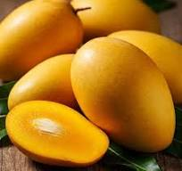
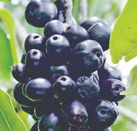
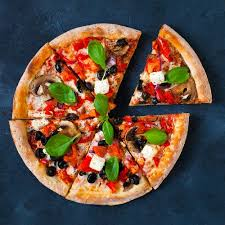

- Aam 
- Jam 
- Kola

- Burger

- Pizza 
- Sandwitch

Not long ago, I went on a hike with a new friend I met in a coliving space in Tenerife. On the drive to the trailhead, we discovered we both run our own travel sites. Getting deep into industry chat, we started discussing our favourite travel blogs — and almost immediately we both brought up Along Dusty Roads. These guys set the bar in terms of photography, site design, and the depth of their content. Such a great example of a travel blog doing what a travel blog should do; providing genuine travel advice and inspiration.